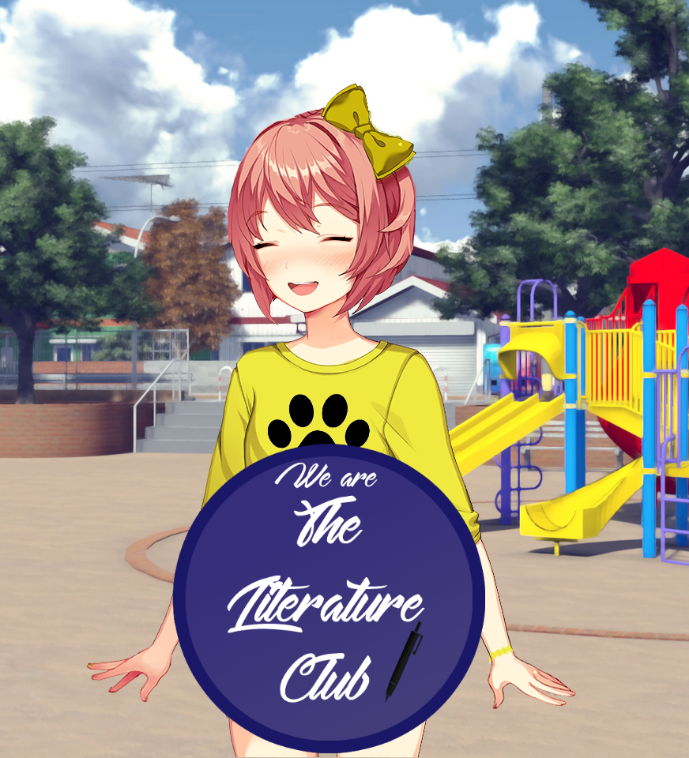

We Are The Literature Club
Esta história foi criada para dar continuidade à história do Clube de Literatura, e para dar às meninas o final que mereciam, bem como o encerramento que a jogadora pensava que nunca iriam conseguir. Conjunto em um cânone alternativo, onde as intromissões dos o presidente da classe nunca aconteceu. We are the Literature Club continua a história estabelecendo uma nova base na narrativa, culminando no renascimento do Clube de Literatura para uma nova era. Com um pequeno elenco de novos personagens e personagens familiares, We are the literature club prepara o palco para uma diversão "reescrever" o mundo de Doki Doki Literature Club, com uma ligeira reviravolta em uma linha do tempo alternativa. Depois de tudo o que aconteceu você está realmente disposto a deixar isso acabar aí?
⬇ Download